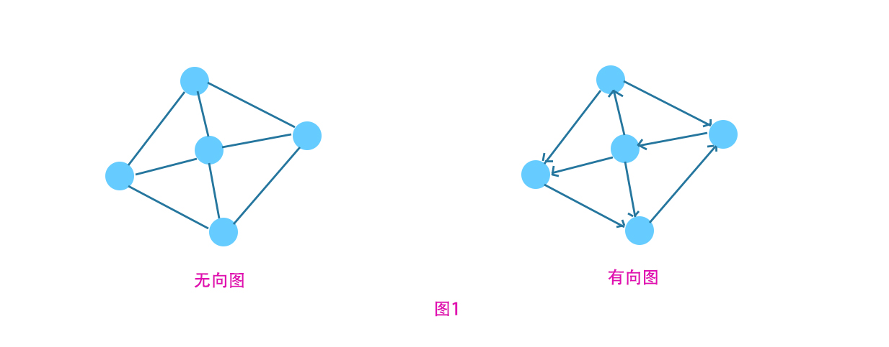

数据结构-图
图是一种被经常使用到的数据结构，基于图的相关算法也具有广泛的应用。本文主要从图的定义、图的相关概念以及图的逻辑表示为重点介绍图。

图的基本概念
图是由点和边组成的一种数据结构，数据结构分为逻辑结构和存储结构（或称为物理结构），而图属于逻辑结构。图按照有无方向分为有向图和无向图。顾名思义：有向图为带有方向的图，无向图为不带方向的图。图1所示为两种类型图的基本结构。
由图可知：图的基本结构由点和边组成。如果将社交关系表示为一种图，则点代表了人，而边代表了人与人之间的关系，从这里也能看出图的广泛性和普遍性。
图的基本概念
图中边带有的值称为权值。与某个顶点相邻的顶点个数称为该顶点的度（有向图中，顶点为起始点称为出度，否则为入度）。一个顶点a到另一个顶点b的所有有序点集与边集称为a到b路径。如果该路径不经历重复点或边，称为简单路径。图中所有路径都为简单路径，则称为简单图。起始点和终止点相同，则称为有环图。两个顶点存在路径，则称他们是连通的。任意两个顶点都连通则称为连通图（有向图中称为强连通图）。
图的存储结构
图的存储结构包括：邻接矩阵、邻接表、十字链表、邻接多重表等，其中邻接矩阵和邻接表有向图和无向图都适用，十字链表适用有向图，邻接多重表适用无向图。
邻接矩阵
邻接矩阵是一个二维矩阵，其中索引值代表顶点编号，值代表边的连接情况（值为0表示无连接，值为1表示顶点间有边）。无向图因为不具有方向，因此G[i][j] = G[j][i](所以关于右对角线对称)。
待续。。。